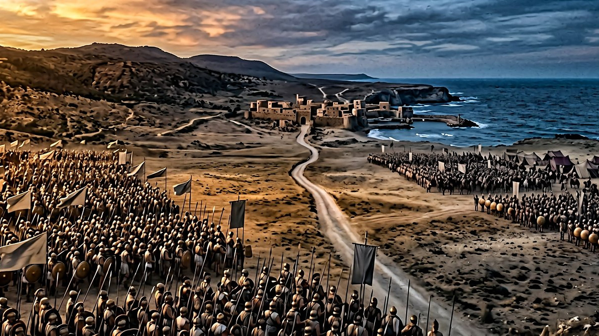
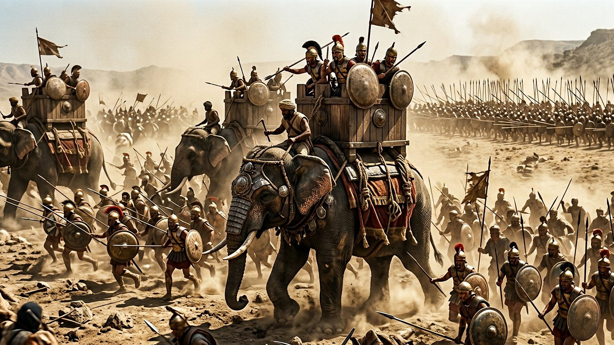
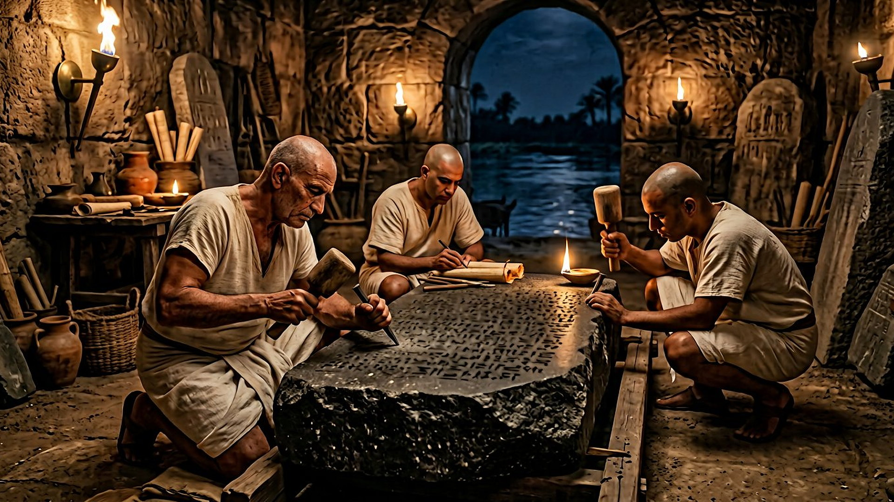

Le texte (Daniel 11)
Verset 2 — Les rois de Perse
Trois rois encore en Perse, puis un quatrième, très riche, qui « soulève tout contre le royaume de Grèce ».

Salle 08 — EN COURS
« Voici que trois rois se lèveront encore en Perse ; le quatrième amassera de plus grandes richesses que tous (…) et il soulèvera tout contre le royaume de Grèce. » — Daniel 11:2 (d'après Crampon 1904)
Reconstitution numérique — le corridor du Levant, entre le roi du Nord et le roi du Sud.
Daniel 11 ne décrit pas des symboles, mais une suite d'événements politiques : des rois qui s'allient par mariage, se trahissent, s'affrontent dans le couloir de terre situé entre l'Égypte — le « roi du Sud » — et la Syrie — le « roi du Nord » —, avec le pays d'Israël pris entre les deux. Avancez pas à pas : à gauche le texte, à droite ce que l'histoire a enregistré.
DONNÉE HISTORIQUE pour les correspondances antiques, documentées par les historiens grecs et les inscriptions ; LECTURE PROPHÉTIQUE pour les identifications des puissances récentes ou actuelles, exposées ici avec neutralité, comme la lecture retenue dans ce musée.
Le texte (Daniel 11)
Trois rois encore en Perse, puis un quatrième, très riche, qui « soulève tout contre le royaume de Grèce ».
L'histoire enregistrée
Après Cyrus et ses successeurs, Xerxès Iᵉʳ, le plus riche des rois perses, lance contre la Grèce l'immense expédition de 480 av. n. è. — Salamine et Platées. La trajectoire est lancée : la Grèce répondra.
Étape 1 / 10 — DONNÉE HISTORIQUE


FAIT ARCHÉOLOGIQUE
La Pierre de Rosette porte un décret des prêtres d'Égypte en l'honneur de Ptolémée V, roi du Sud, daté du 27 mars 196 av. n. è. — en pleine période décrite par Daniel 11:14-17. C'est ce texte en trois écritures qui a permis de déchiffrer les hiéroglyphes égyptiens (« signes sacrés sculptés », en translittération : hiéroglyphes).
British Museum, Londres — n° EA 24. Fiche officielle du British Museum
Selon la lecture retenue dans ce musée, le « roi du Nord » et le « roi du Sud » désignent, à chaque époque, les puissances rivales qui se disputent la domination en encadrant le peuple de Dieu — jamais des peuples à haïr, et ces identifications sont présentées comme une lecture, pas comme un fait d'archives. Pour la période actuelle, cette lecture identifie le roi du Sud à la puissance anglo-américaine, et le roi du Nord à la Russie et à ses alliés — identification rendue publique à la fin des années 2010 dans le cadre de cette compréhension. Les derniers versets du chapitre (Daniel 11:40-45) décrivent une poussée finale du roi du Nord, sans vainqueur humain : la conclusion appartient au Royaume de la salle 07. Statut de cette partie : en cours, et la salle 15 en détaillera la séquence, sans date.
Daniel, chapitre onze, ne parle pas en symboles : il déroule une suite d'alliances, de mariages diplomatiques, de trahisons et de batailles entre un roi du Nord et un roi du Sud, avec le pays d'Israël pris dans le corridor qui les sépare. Avancez étape par étape dans la double colonne de cette salle : à gauche le texte, à droite ce que les historiens grecs et les inscriptions ont enregistré, de Xerxès à Alexandre, puis des Lagides d'Égypte aux Séleucides de Syrie. Pour les époques récentes, la salle présente avec neutralité la lecture retenue dans ce musée, clairement étiquetée comme une lecture prophétique, et elle distingue ce qui est accompli de ce qui reste en cours, sans aucune date.
Daniel 11 n'est pas vague : un mariage d'alliance suivi d'un assassinat (verset 6), une invasion de représailles menée par le frère de la reine (verset 7), une bataille précise au sud du pays (versets 11-13), un mariage diplomatique qui tourne au profit du Sud (verset 17), un roi méprisé qui s'empare du pouvoir par intrigues puis profane le sanctuaire (versets 21-31). La correspondance se joue sur des enchaînements datés et vérifiables dans les sources païennes elles-mêmes — Polybe, Appien, les décrets gravés. C'est cette densité de détails enchaînés, reconnue dès l'Antiquité, qui distingue ce chapitre d'un horoscope politique.